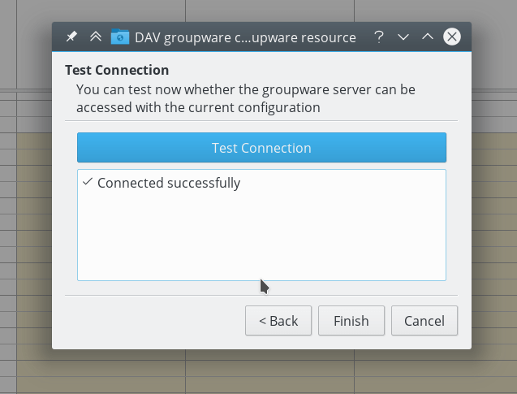
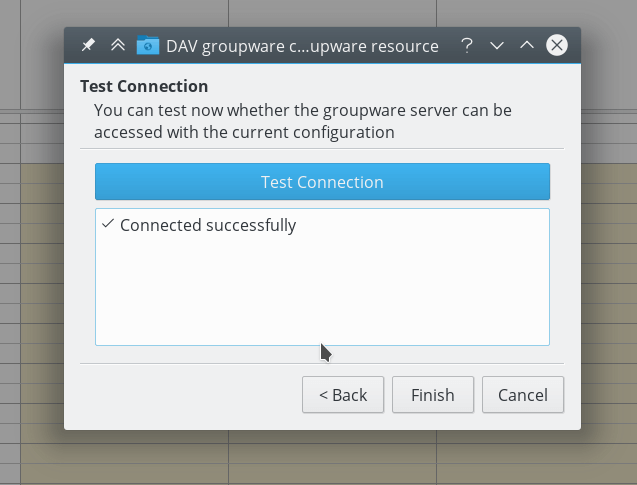

Mit KDE Kontakt synchronisieren
KOrganizer, Kalender und KAddressBook können Ihre Kalender, Kontakte sowie Aufgaben mit einem Nextcloud-Server synchronisieren.
Führen Sie die folgenden Schritte aus, je nachdem, ob Sie KOrganizer oder Kalender verwenden:
Im KOrganizer:
Öffnen Sie KOrganizer und in der Kalenderliste (unten links) klicken Sie rechts und wählen „Kalender hinzufügen“ aus:

In der angezeigten Liste von Quellen „DAV groupware resource“ auswählen:

Im Kalender:
Öffnen Sie Kalender und öffnen Sie in der Menüleiste die Einstellungen und wählen Sie dann
Kalenderquellen->Kalender hinzufügen:
In der angezeigten Liste von Quellen „DAV groupware resource“ auswählen:

In KOrganizer und Kalender:
Enter your username. As password, you need to generate an app-password/token (Learn more):

Wählen Sie
Nextcloudals Groupware-Server-Option:

Tragen Sie die URL des Nextcloud-Servers und, falls notwendig, den Installationspfad ein (alles nach dem ersten /, zum Beispiel
mynextcloudinhttps://exampe.com/mynextcloud). Dann auf Weiter klicken:

Sie können jetzt die Verbindung testen, was bei der ersten Verbindung etwas dauern kann. Wenn es nicht funktioniert, können Sie zurückgehen und es mit anderen Einstellungen ausprobieren.
 

Wählen Sie einen Namen für diese Quelle, zum Beispiel
ArbeitoderZuhause. Standardmäßig werden CalDAV (Kalender) und CardDAV (Kontakte) synchronisiert:

Bemerkung
Sie können ein manuelles Aktualisierungsintervall für Ihre Kalender und Kontakte festlegen. Standardmäßig liegt dieses Intervall bei 5 Minuten und sollte für die meisten Szenarien geeignet sein. Wenn Sie einen neuen Termin erstellen, wird dieser unmittelbar mit Nextcloud synchronisiert. Wenn Sie dies ändern möchten, um Energie zu sparen oder Ihr mobiles Datenkontingent zu schonen, können Sie die Einstellung so ändern, dass Sie eine Aktualisierung über einen Rechtsklick auf das entsprechende Element in der Kalenderliste anstoßen können.
Nach einigen Sekunden bis Minuten, je nach Internetverbindung, finden Sie Ihre Kalender und Kontakte in den KDE-Kontakt-Anwendungen KOrganizer, Kalender und KAddressBook sowie im Plasma-Kalender-Applet: